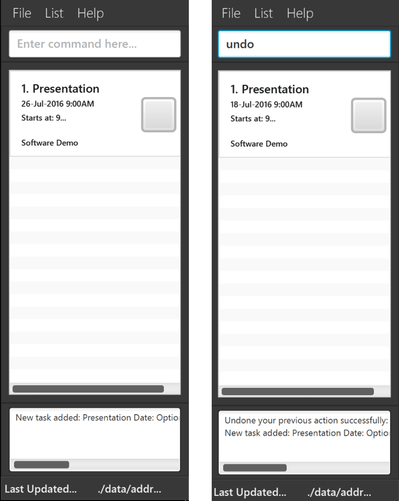
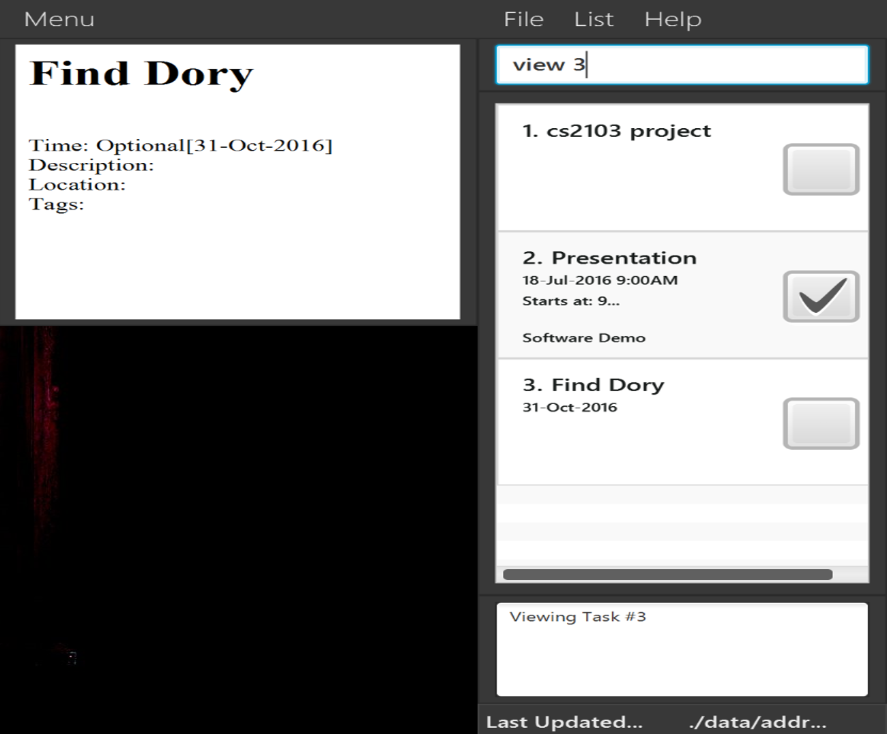

Figure 1. Welcome Screen
SmartyDo is a to-do-list application. With SmartyDo, forgetting upcoming deadlines and sleepless nights over incomplete tasks are a thing of the past. SmartyDo increases your efficiency by showing the lists of tasks that can be completed simultaneously. Treat SmartyDo like your personal assistant and just focus on completing your tasks!
Launch SmartyDo: Simply double-click on the SmartyDo.jar file to start SmartyDo. You will be greeted with a simple interface that has three components: a Visual Panel, a Message Box and a Command Bar.
Figure 1. Welcome Screen
Command Bar is where you enter short commands to tell SmartyDo what to do.
Visual Panel is where you can see a comprehensive list of your tasks.
Message Box shows the result of your command.
In this section, you will be introduced to the various commands that you will need when using SmartyDo. These commands will be described to you in the format described below.
Command Format
Words in lower case are the command.
Words in upper case are the parameters.
Items in square brackets are optional.
The order of parameters is flexible.
You can use the help command to gain access to this user guide should you need any help with the commands and their format. Should you enter an invalid command (e.g. abcd), information will be shown, when possible, to help correct your mistakes. You may also access this function through a keyboard shortcut.
Format: help
Keyboard Shortcut: 'F1`
Example:
If you wish to get help on using SmartyDo, you may enter help into the Command Bar.

Figure 2. SmartyDo's help Command
After entering the command, a new window will appear showing you the user guide.
You can add a task into SmartyDo by using the add command. There are number of parameters that you can use to add more details to the task. Below is a summary of the various parameters and their usage:
Here is the summary of the parameters and their usage:
| Parameter | Flag | Format Requirements | Optional |
|---|---|---|---|
TASK_NAME |
/n required if TASK_NAME is not the first parameter |
No | |
DATE_TIME |
t; | [Date] [Start_Time] [End_Time] , delimited by spaces | Yes |
TAG |
t/ | alphanumeric | Yes |
LOCATION |
a; | alphanumeric | Yes |
DESCRIPTION |
d; | alphanumeric | Yes |
Table 3.2. Add Command Parameters
TASK_NAME is the name of the task and this parameter is compulsary.Date is the date of the task supports date format of
dd/mmm/yyyy eg:20-Jan-2017 and dd/mm/yyyy with / interchangleable with . and - eg: 20-01-2017.START_TIME and END_TIME is the starting time and ending time of the task respectively. You may consider to use these parameters when starting time and/or deadline is known. You may omit the details of 'DATE_TIME' which will result in a task that has no time frame.TAG is the characteristic you can add to the task. Such tags can be "Urgent", "HighPriority" and etc.LOCATION is the place of task being done. You can use this parameter to remind you where to go to complete the task.Format : add TASK_NAME [t; DATE START_TIME] [a;LOCATION] [t/TAG] [d;
You don't have to enter the optional parameters when you don't need them. The order of the parameters are not fixed. You can enter the parameters in any order. For example,
add t/[TAG] t; DATE START_TIMEis also correct format.
Example:
Let's say you want to add task named "Presentation" which is scheduled for 18 July 2016, 9:00AM. All you need to do is enter the following as shown below.

Figure 3. Example of add command
After entering the command, MessageBox will show you task is successfully added into SmartyDo and you will see the updated list of task in the VisualBox.
You might want to edit details of a task for several reasons. For example, when deadline was extended you will need to update the SmartyDo for this change. Using edit command will solve this problem.
Format: edit INDEX PARAMETER_TYPE NEW_VALUE
PARAMETER_TYPE the type of the parameter we want to change and NEW_VALUE is the new value for that parameter.
edit command edits the task at the specified INDEX. You can easily identify the INDEX of the task by looking at the Visual Panel.
If the task you want to edit is not shown in the Visual Panel, you can use view or find command to find the required task.
Example:
Let's say you want to add deadline time for task named "Presentation". Then, you must first check the INDEX of that task. In this case, the INDEX of the task is 1. So to add deadline for this task, enter edit 1 t; DEADLINE. This will update the deadline of the task. A demonstration of this functionality shown below.

Figure 4. Before(left) and after(right) of an edit command
Sometimes, you may also want to delete tasks due to unexpected circumstances. To help you to handle such problem, delete command can be used. delete command is simply deleting task from SmartyDo.
Format: delete INDEX
Similar to edit command, delete command also uses INDEX. INDEX can be found in Visual Panel by using view command and find command.
Example:
If you want to delete specfic task, find the INDEX of that task. Let's say the INDEX is 1. Then, enter delete 1 in the command bar.

Figure 5. Example of delete command
After entering delete command, SmartyDo will delete the task specified by the INDEX and will show the updated list in the Visual Panel. In the screenshot above, you can see that the "Presentation" task has been deleted from SmartyDo.
Instead of deleting the task, you may want to mark the task as complete and store the details of the task in the SmartyDo. In this case, you can use done command. By using done command, you can easily identify the completed tasks from the list.
Format: done INDEX
Similar to delete command and edit command, INDEX is used in done command.
Example:
You have now completed the task named "Presentation" and now you want to mark this task as complete. To do this, you will need to check the INDEX of this task. In this case, INDEX of this task is 1. So, entering done 1 will mark "User Guide" task as complete.

Figure 6. Example of done command
After entering the done command, you are now able to identify the completed task easily from the list.
With undo, you are allowed to reverse your previous changes sequentially while redo allows you to reverse the change done by undo.
undo command requires the application to have executed atleast one undoable command after launching.redo command requires the application to have executed atleast one succussful undo command after launching.Undoable Commands:add, delete, edit, done
SmartyDo does not store history of actions in your computer. Your history of actions resets when SmartyDo is launched. Also, if you enter any undoable command after entering
redoorundo, your history of actions would be removed.
Format: undo, redo
Example:
Let's say you have added a task and your friend told you that your tutor has changed the date. You would like to undo it. You can undo it as long as you just added it, as shown below.

Figure 7.1. Before(left) and after(right) of an undo command
By entering undo command, SmartyDo updates your list of tasks to how it was before you executed an undoable action. From the screenshot above, you can see that the date of the task named "Presentation" had changed.
However, you realized that your friend was wrong and you want to change the date back again. In this case, you do not need to use edit command again. Instead you can simply use redo command, as shown below.

Figure 7.2. Before(left) and after(right) of an undo command
By using redo command, SmartyDo updates your list of tasks to how it was before you executed undo command. From the screenshot above, you can see that the "Presentation" task has been restored to its previous state.
View the task identified by the parameter. A full detailed description will appear in a pop up window.
Format: view PARAM
Example:
Let's say you want to know detailed information about the third task in the Visual Panel. All you need to do is enter view 3 into command bar, just as shown below.

Figure 8. Example of view command
After entering the command, Browser Panel will show a detailed description about task 3.
If you want to find tasks that contain specific keyword in their name, you can use find command. find command is a command that will list all the tasks matching atleast one keyword. You can enter more than one keyword for find command.
Format: find KEYWORD [MORE_KEYWORDS]

Figure 9. Example of find command
Beware that keywords are case sensitive and only the task's name is searched. However, the order of the keywords does not matter. e.g.
find cs2103 projectis same asfind project cs2103
You can filter the list of tasks that you are viewing on the Visual Panel.
Format: list KEYWORD where KEYWORD in this case are any of the following: ALL/OVERDUE/UPCOMING/COMPLETED/INCOMPLETE
For example, after finding specific tasks, to return the Visual Panel back to where it lists all the tasks, simply input list ALL just as shown below.

Figure 10. Example of list command
After using SmartyDo, you can exit the program by using exit command.
Format: exit
By entering exit command in the command box, SmartyDo will quit and save the data.
It is okay if you cannot remember the syntax entirely! As long as you remember the keyword some reshuffling of the parameters entered is fine. Our program will ask you for confirmation if we are unsure what you want.
SmartyDo will automatically save your data in the hard disk after any command that changes the data. There is no need to save manually.
| Command | Parameters | Format |
|---|---|---|
| Help | help |
|
| Add | TASK_NAME, DATE_TIME,[LOCATION], [TAG] | add /n TASK_NAME d; DATE START_TIME END_TIME t/ TAG a; LOCATION |
| View | PARAM | view PARAM |
| Find | KEYWORD, [MORE_KEYWORD] | find KEYWORD [MORE_KEYWORD] |
| Edit | INDEX | edit INDEX |
| Undo | undo |
|
| Redo | redo |
|
| Done | INDEX | done INDEX |
| Exit | exit |
Table 5. Command Summary
| Command | Shortcut |
|---|---|
| help | F1 |
| list all | Ctrl+1 |
| list overdue | Ctrl+2 |
| list upcoming | Ctrl+3 |
| list completed | Ctrl+4 |
| list incomplete | Ctrl+5 |